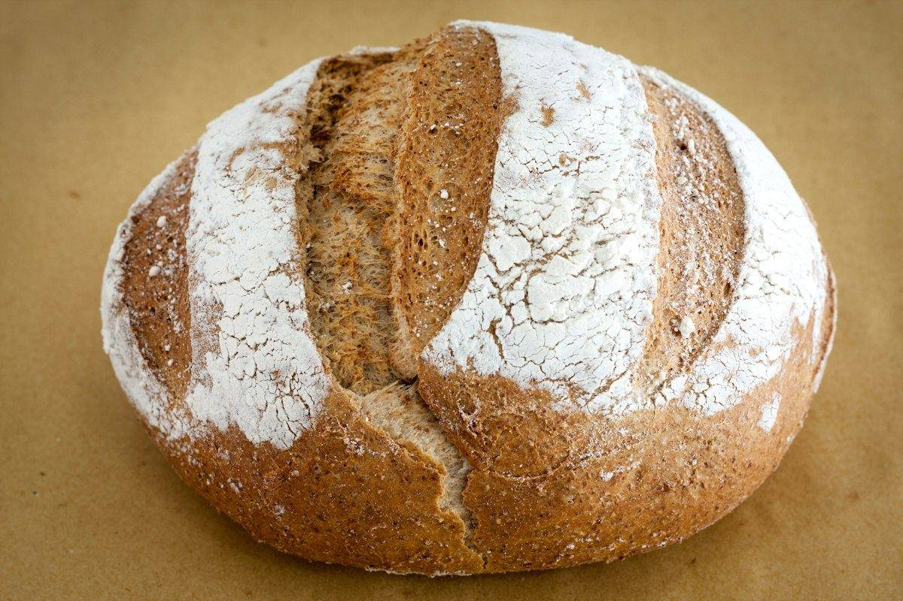
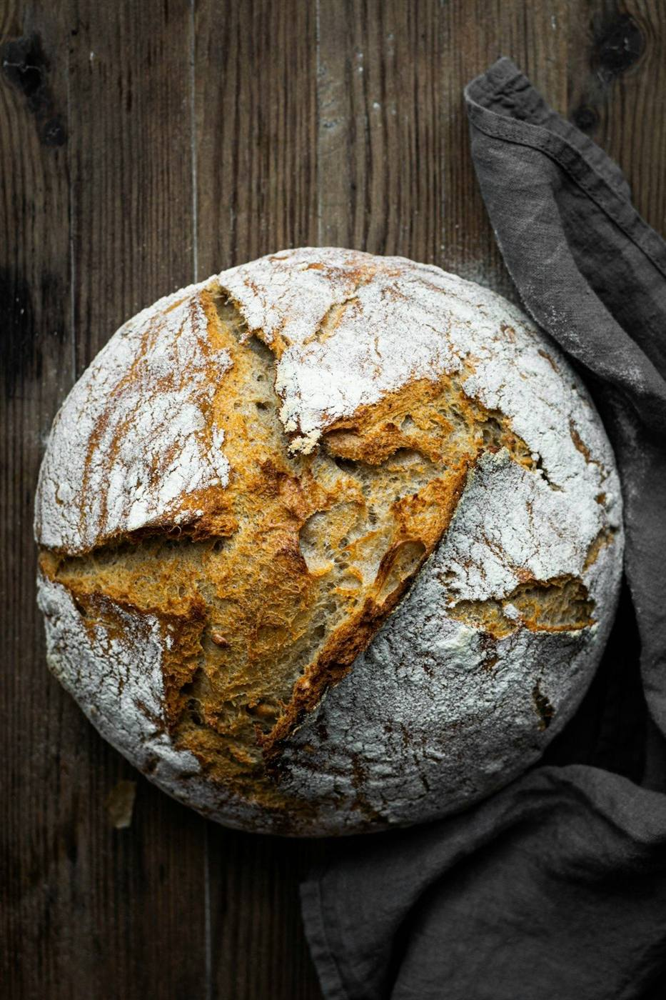
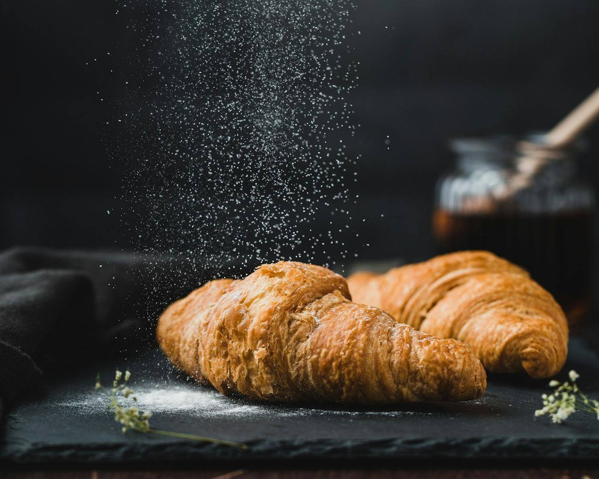
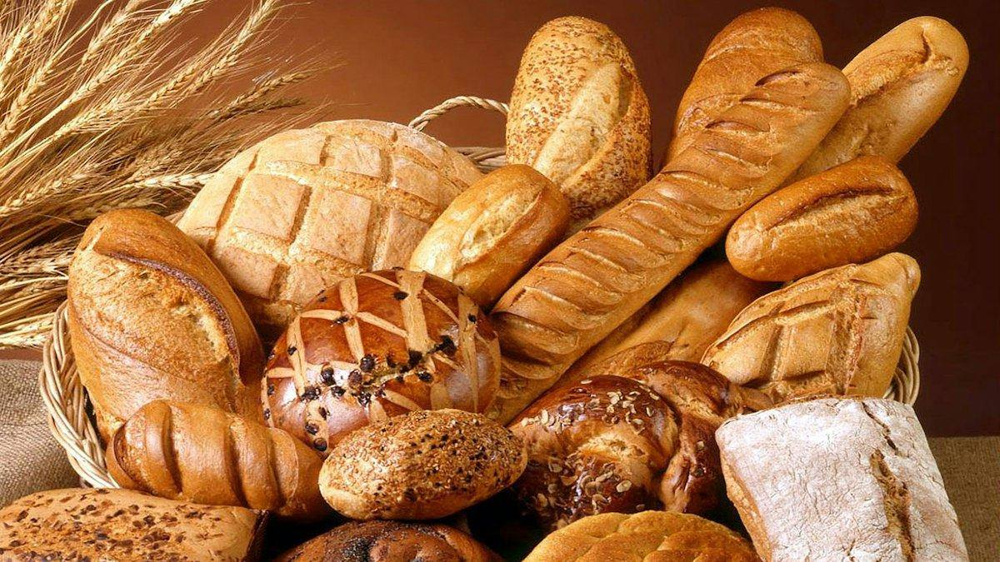
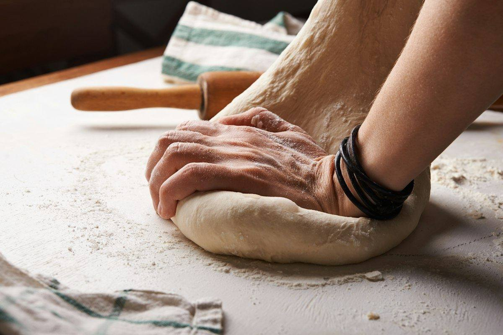
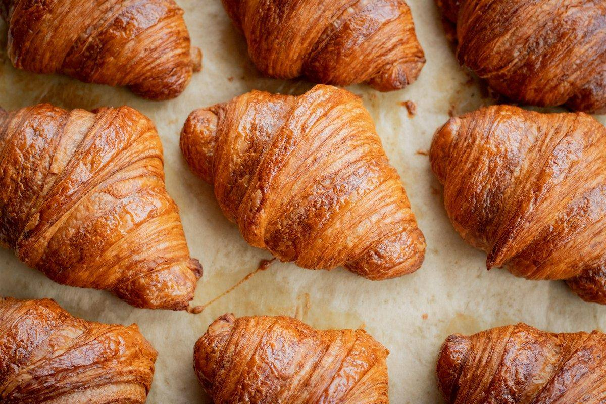
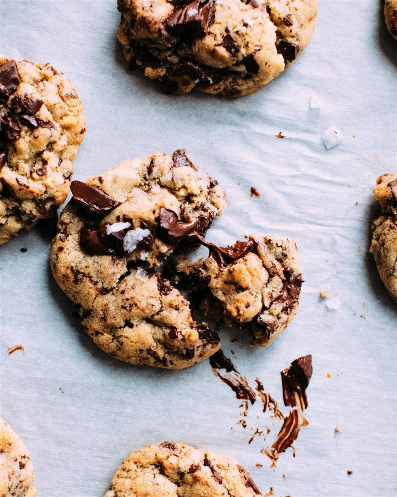

Andalan
Sourdough Country Loaf
Kulit renyah, crumb terbuka, asam yang seimbang. Fermentasi 36 jam dengan starter alami.
Sleman, Yogyakarta
Sourdough, croissant, dan kue kering dengan fermentasi 24–48 jam. Dibuat tangan setiap pagi dalam batch kecil, dari tepung lokal dan mentega segar.




Laminasi croissant, dikerjakan tangan setiap pagi.
Tentang kami
Dapur Sabana mulai dari satu oven rumahan dan starter sourdough yang masih kami pakai sampai hari ini. Setiap loaf difermentasi perlahan, dibentuk tangan, dan dipanggang dalam batch kecil supaya tidak ada yang dikorbankan demi kecepatan.
Sekarang kami melayani pelanggan tetap, kafe, dan perusahaan yang memesan hampers serta katering acara — dengan standar yang sama seperti loaf pertama kami.
Produk andalan
Dibuat dalam batch terbatas setiap hari. Pre-order dua hari sebelumnya untuk memastikan ketersediaan.

Andalan
Kulit renyah, crumb terbuka, asam yang seimbang. Fermentasi 36 jam dengan starter alami.

Paling dicari
Berlapis dan mengilap, dibuat dengan mentega segar dan teknik laminasi tiga hari.

Favorit hampers
Nastar, kaastengel, dan cookies cokelat. Tersedia dalam toples hadiah dan kemasan korporat.
Pesanan khusus
Hampers korporat, kue pernikahan, dan katering pastry — dikerjakan dengan jadwal produksi yang jelas dan satu orang penanggung jawab.
Mulai 20 paket, kemasan kustom berlogo, pengiriman terjadwal. Cocok untuk hari raya dan apresiasi klien.
Kue 2–5 tier dengan sesi konsultasi desain dan trial rasa sebelum hari-H.
Pastry tray dan roti untuk seminar, gathering, atau peluncuran produk, mulai 30 porsi.
Galeri proyek
Sebagian pesanan yang sudah kami kerjakan — dari 40 paket sampai 400 paket dalam satu jadwal.
Testimoni
“Hampers Lebaran 400 paket untuk seluruh karyawan selesai tepat waktu dan kualitasnya konsisten. Tidak ada satu pun yang sampai rusak.”
“Kue pernikahan kami persis seperti referensi yang diminta, bahkan lebih rapi. Sampai di venue tanpa lecet sedikit pun.”
“Sourdough-nya beda dari yang ada di pasaran. Crumb terbuka, asam seimbang, dan masih enak di hari kelima tanpa pengawet.”
Mulai dari sini
Ceritakan kebutuhan dan tanggalnya. Kami balas dalam 1×24 jam kerja dengan estimasi harga dan jadwal produksi.